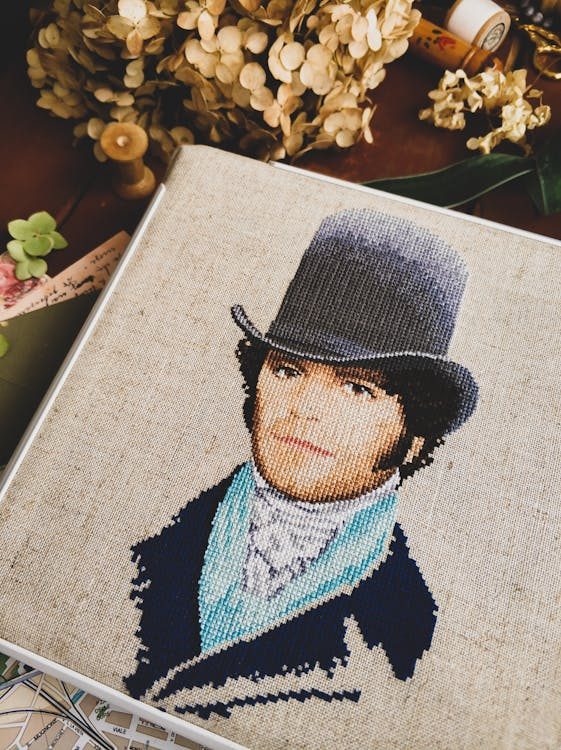

A Brief History of Pixelart
Pixelart has been around since the dawn of computer graphics. It has its origins
in video games, and this is primarily where it has enjoyed most of its popularity
ever since. Since it can be argued that the pixelart and video games go hand-in-hand,
their histories can be drawn along similar lines.
We'll start at the beginning... the very beginning.
14th Century - 1972
The Analog Era
Ha! You thought we were starting with computer graphics, didn't you? It turns out that pixelart has an ancestor: Cross-stitching!

Cross-stitching is known to have existed since at least the 7th century AD.
It was often used in samplers
to teach needlework skills to young girls. The earliest surviving sampler featuring cross-stitching
was made by Jane Bostocke all the way back in the 1590s.
(linked here)
Take a look at most any cross-stitching pattern from
1972 - 1983: The Bubble Era
Named the Bubble Era because of the video game bubble that popped towards the end of this period, the Bubble Era is when video games first began to appear in the public consciousness. The graphics used in many systems had very limited color palettes, from single-bit monochrome (e.g. Pong or Asteroids) to the Atari VCS, a console that
1983-1987: The 8-bit Era
Even though game consoles and computers prior to this era also had 8-bit data buses, this was the first time video game consoles were marketed by their "bits". The increased capabilities of microprocessors allowed Nintendo and other companies to develop more and more ambitious games. The color spaces were still somewhat limited, but these limits now had more to do with regional color television standards than the hardware themselves. Some of the most recognizable video game franchises developed during this era, such as Final Fantasy, Mario Bros., and The Legend of Zelda.
1987-1993: The 16-bit Era
Technology continued to advance at a rapid pace, and so did the sophistication of both games and computer graphics, but they were not yet to the point where pixelart had become obsolete.
1993-2006: The 64-bit era
During this period, computers developed to the point where games using 3D models, shaders and texture mapping became feasible. Pixelart largely became relegated to handheld consoles, whose low computational power made it still a necessity.
2006 - Present: A Resurgence
With the development of various game development engines that have made game production substantially easier, pixelart has seen a renaissance in recent years. Flash games from the mid-2000s, such as those developed by Nitrome, were often are made in this style. Indie pixelart games made by solo developers have enjoyed famous success and popularity on Steam and other platforms. Now, rather than being considered low-tech or "retro", pixelart is simply another stylistic choice for game development and other artistic pursuits.